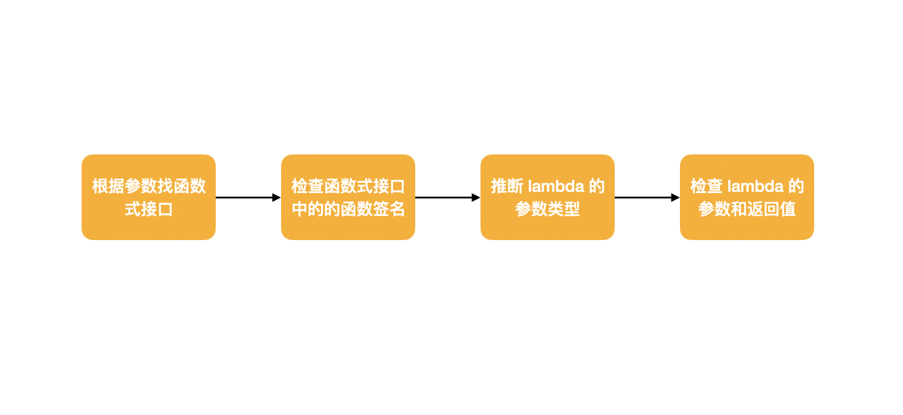

如何理解 Java8 的函数式编程
Java8 出现的时间已经不算短了，免费维护期马上也要到期了，官方已经开始推荐使用 Java11。
Java8 是革命性的一个版本，一直以来，Java 最受诟病的地方就是代码写起来很啰嗦，仅仅写一个 HelloWorld 都需要些很多的样板代码。
在 Java8 推出之后，啰嗦的代码有了很大的改观，Java 也可以写出简单优美的代码。最明显的改观就是 Java 开始支持函数式编程。
函数式编程的定义很晦涩，但是我们可以将函数式编程理解为函数本身可以作为参数进行传递，就是说，参数不仅仅可以是数据，也可以是行为（函数或者方法的实现其实就是逻辑行为）。
可能是 Java8 步子跨的太大，以至于现在还有很多人没有赶上来，依然用 Java8 在写 Java5 风格的代码。
这篇文章的目的就是彻底说清楚 Java8 的变化，以及快速全面的使用 Java8 的特性，让 Java 代码优雅起来。
函数式接口
在开始说 Java8 的函数式编程之前，我们需要说明一下，在 Java8 中新增加的一个概念，叫函数式接口。
这个函数式接口是 Java8 实现函数式编程的基础，正是这类接口的存在，才能把函数（方法）当做参数进行传递，至少表面上看起来是这样的，但是实际上传递的还是对象，这个问题我们下面再讨论，先回到函数式接口。
下面就是一个函数式接口：
public interface Action {
public void action();
}
这个函数式看起来和普通的接口没有什么区别，唯一的区别是函数式接口只能有一个抽象方法。
如果你想让别人立马理解这个接口是函数式接口，可以加上 @FunctionalInterface 注解，这个注解不会提供任何额外的功能，仅仅用来表示这个接口是一个函数式接口。
@FunctionalInterface
public interface Action {
public void action();
}
只能有一个抽象方法是为了更方便的把函数作为参数来传递，这个后面再细说。
我们可以根据自己的需要来定义函数式接口，JDK 为了使用方便，内置了很多函数式接口，日常使用完全够了。
常用的函数接口有：
- Function
- Predicate
- Consumer
函数式接口其实就这么简单，看到这里你可能还是对函数式接口不是很理解，没关系，现在你仅仅只需要记住函数式接口就是模板。
Lambda 表达式
说起 Java8 的函数式编程，很多人都知道 lambda 表达式，这也是 Java8 中最容易被人记住的地方。
先来通过一个直观的例子来了解一下 lambda，在操作 ArrayList 等数据结构时，我们有可能要对其中的数据进行排序，比如：
Comparator<Integer> comparator = new Comparator<Integer>() {
public int compare(Integer i1, Integer i2) {
return i1.comparaTo(i2);
}
};
在上面的代码中，真正有用的代码也有比较大小的那行，其他的都是样板代码。在这样的情况下，lambda 就很有用。
Comparator<Integer> comparator = (Integer i1, Integer i2) -> {return i1.compareTo(i2);}
这样看起来是不是很简单了，但是还是继续优化，可以把返回参数的部分也省略：
Comparator<Integer> comparator = (Integer i1, Integer i2) -> i1.compareTo(i2)
既然两个参数都是 Integer 那是不是也可以省略，最后就得到了下面这样的形式：
Comparator<Integer> comparator = (i1, i2) -> i1.compareTo(i2)
这就是 lambda 的力量，可以把上面那么多的代码浓缩成一行。
lambda 其实就是一段代码，但也不仅仅是一段代码，再简单的 lambda 也会有三部分，参数列表，箭头和 lambda 主体，上面的 (i1, i2) 就是参数列表， i1.compareTo(i2) 就是 lambda 主体，箭头把这两部分隔开了。
lambda 是匿名的，这点和 Java 中的匿名实现类有点像（本质上一样），而且它是一种函数，不属于任何类（属于类的函数称之为方法），并且可以作为参数进行传递，而且还很简洁。
看到这里，可能就有人猜到函数式接口和 lambda 之间可能有某些关系了，没错，我们已经快说到最重要的部分。
在这之前再来理解一个概念，函数签名，函数签名为可以表示一类函数，如果两个函数的以下部分相同，就可以说这两个函数的签名一致：
- 函数参数及其类型
- 返回值及其类型
- 可能会抛出的异常
- 还有访问控制符（public等等）
最关键的地方来了，只要 lambda 和函数式接口方法的签名一致，lambda 表达式就可以作为参数传入到以该函数式接口为参数类型的方法中。
来看个详细的例子， Comparator 接口的定义如下：
@FunctionalInterface
public interface Comparator<T> {
int compare(T o1, T o2);
}
虽然 Comparator 中方法不止一个，但是抽象方法只有 compare 一个，上面的 lambda 完全可以作为 compare 方法的实现，实际上，lambda 表达式确实是作为函数式接口抽象方法的实现，而且，lambda 表达式为作为整个函数接口的实例。
到这里，真相大白，Java 8 的虽然支持了函数式编程，这不代表函数就是 Java中的一等公民了，每一个函数其实还是被包裹成一个对象，对象依然是 Java 中的一等公民。
所以简单来说，只要 lambda 的表达式的参数和返回类型可以与函数式接口中的抽象方法对的上，lambda 就可以作为该函数式接口的实现进行传递。
比如上面列举的几种函数式接口，其实就是对一些通用函数的抽象，比如 Function 函数式接口如下：
@FunctionalInterface
public interface Function<T,R> {
R apply(T t);
}
这种就代表接受一个参数，返回另一个值的函数，只要满足这个要求的 lambda 表达式都可以作为 它的实现。
再比如 Predicate 接口，代表接受一个参数返回一个布尔值的函数：
@FunctionalInterface
public interface Predicate<T> {
boolean test(T t);
}
Comsumer 接口表示接受一个参数，什么都不返回的函数：
@FunctionalInterface
public interface Predicate<T> {
boolean test(T t);
}
如果这样理解起来还是有点困难，那就把这些函数式接口理解为 lambda 表达式的类型。
类型检查和类型推断
在上面我们说到了只要函数式接口抽象方法的函数签名与 lambda 一致，那么就可以把 lambda 表达式作为该函数式接口的实现。
上面的例子中， lambda 的参数类型也是可以省略的，那么 Java 是如何判断 lambda 是否与函数式接口匹配呢？
如果 lambda 表达式中，参数和返回值的类型都省略之后，需要从使用 lambda 的上下文推断出来。

方法引用
本来到这里应该就很完美了，lambda 够简洁，用它写代码，可以省略很多无用的样本代码，但是 lambda 也不完美，因为 lambda 表达式的代码很难复用，而且很多的 lambda 表达式仅仅就是调用了其他的方法。
这个时候，方法引用就可以派上用场了，比如上面的例子，其实仅仅就是调用了 Integer.compareTo() 方法：
Comparator<Integer> comparator = (i1, i2) -> i1.compareTo(i2)
还可以简化成下面的样子：
Comparator<Integer> comparator = Integer::compareTo
使用方法引用的时候，要使用 :: ，而且任何方法都可以这样被引用，无论是静态方法还是实例方法。
方法引用可以被认为是 lambda 的语法糖，使用方法引用可以让代码更加简洁，更直观，看到方法引用的名称就能大概知道代码的逻辑，并且还可以对一些代码进行复用。
写出Java8 风格的代码
在 Java8 之后，很多代码的写法应该摒弃，下面列举一些常见的例子。
遍历 List
Java8 以前：
for(Integer i : list) {
System.out.println(i);
}
Java8 及以后：
list.forEach(System.out::println);
forEach 接收 Consumer 类型的函数，而 System.out.println() 刚好就符合要求。
遍历 Map
Java8 以前：
for (Map.Entry<Integer, Integer> entry : map.entrySet()) {
System.out.println("Key: " + entry.getKey() + ", Value:" + entry.getValue());
}
Java8 及以后：
map.forEach((k, v) -> {System.out.println("Key: "+ k +", Value: "+ v)});
这里的 forEach 不是接收 Consumer 类型的函数，而是接收 BiConsumer 类的函数，可以用来处理 map 这种包含 key-value 类型的数据，在大多数场景下，内置的函数式接口以及足够我们使用，只有在一些特殊的场景下才需要自己定制。
这里也没有现成的方法引用，所以就可以使用 lambda 表达式来实现。
执行异步任务
假如要使用线程池来执行任务。
Java8 以前：
ThreadPoolExecutor executor = new ThreadPoolExecutor(10, 10, 0, TimeUnit.SECONDS, new ArrayBlockingQueue<Runnable>(2000));
executor.submit(new Runnable() {
public void run() {
System.out.println("Thread pool execute");
}
});
Java8 以后：
ThreadPoolExecutor executor = new ThreadPoolExecutor(10, 10, 0, TimeUnit.SECONDS, new ArrayBlockingQueue<Runnable>(2000));
executor.submit(() ->{
System.out.println("Thread pool execute");
});
也可以使用 lambda 来解决这个问题，Runnable 也是一个函数式接口。
文 / Rayjun